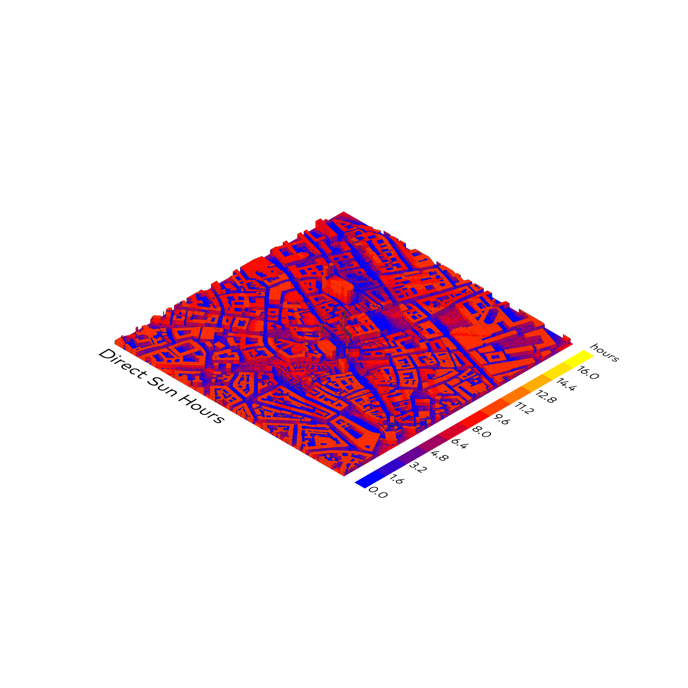
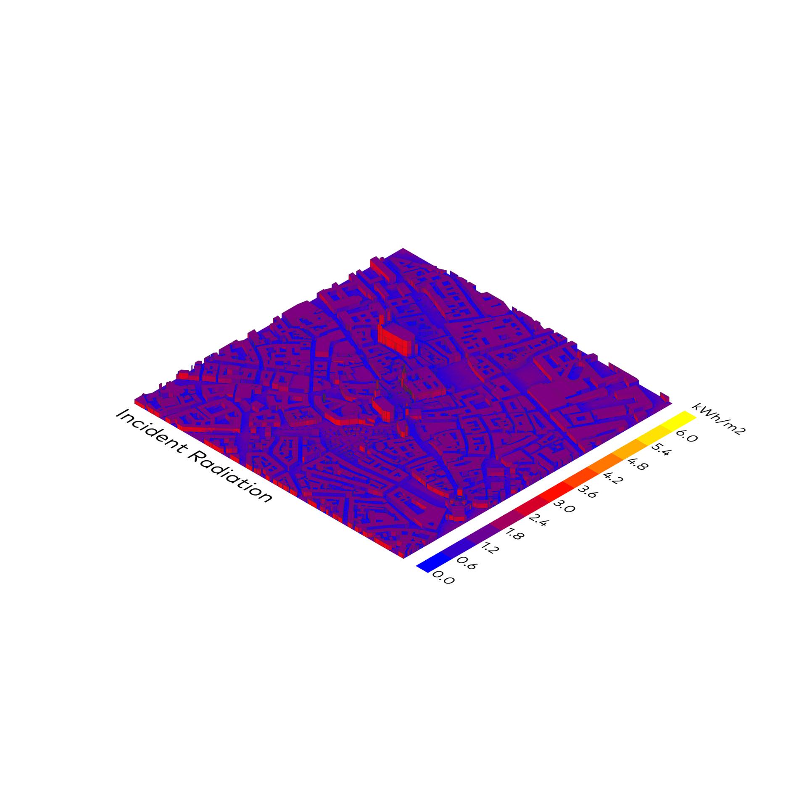

Sonnenstrahlung
Ladybug
⬤ Ladybug quantifiziert kumulative Sonnenenergie (kWh/m²/a) durch raytracing-Simulation – präzise GHI, DNI, DHI unter Berücksichtigung von Atmosphäre und lokalen Klimadaten. Oberflächenbezogene Farbcodierung markiert Hochertragszonen saisonal und jährlich. Iterative parametrische Optimierung von Neigung und Ausrichtung maximiert Erträge. Basis für PV-Dimensionierung, Solarthermie und solaraktive Architektur – direktes Design-Tool für Energielösungen.
⬤ Ladybug quantifies cumulative solar energy (kWh/m²/a) through ray tracing simulation – precise GHI, DNI, DHI taking into account the atmosphere and local climate data. Surface-related color coding marks high-yield zones seasonally and annually. Iterative parametric optimization of tilt and orientation maximizes yields. Basis for PV dimensioning, solar thermal energy, and solar-active architecture – direct design tool for energy solutions.